The next chapter
for Salvor.
Introducing Salvor Labs: an open foundation, a new premium direction, and an ecosystem built around useful AI tools.
Salvor began as a founder-led effort to help coding agents and human teams retain what they learn. That work is growing into Salvor Labs, the commercial and engineering organization behind the expanding Salvor ecosystem.
As part of that transition, the open-source repository has moved from dwasyluk/Salvor to SalvorLabs/Salvor.
Salvor OS stays open.
Salvor OS is the free, MIT-licensed foundation: repository-owned engineering knowledge and governance for agents and human teams. Decisions, lessons, and context stay with your project across sessions and models.
It remains useful on its own. You don’t need $SALVOR, a commercial account, or a Salvor Labs service to use it. Labs will continue to participate in and support upstream development.

Salvor+ takes it further.
Alongside the open-source foundation, we’re developing Salvor+: a separately maintained, private commercial derivative with proprietary enhancements and services.
Salvor+ MCP and further premium services are part of that direction. Labs can bring upstream improvements into Salvor+ and contribute selected work back to Salvor OS, while developing optional commercial capabilities alongside it.
Five directions for Salvor+ and $SALVOR.
Contributor rewards are already part of Salvor. The next five directions for $SALVOR utility sit within Salvor+. These enhanced services and programs are not included in Salvor OS.
The five directions below are being developed for Salvor+. They are not live offerings, a release sequence, or a promise of availability. Community bounties and builder benefits can support open-source work and contributors while remaining Salvor+ programs.
Agent-native payments
Exploring ways for agents to use $SALVOR for premium tools and context, including x402.
Community-powered bounties
A Salvor+ program for the community to help fund the Salvor OS features it wants to see built.
Capacity locking
Exploring how committed $SALVOR could unlock recurring Salvor+ capacity and priority access.
Preferred $SALVOR payments
Favorable pricing and benefits for $SALVOR payments on eligible Labs offerings.
Builder benefits
Recognition, Salvor+ access, and ongoing perks for verified Salvor OS contributors.
Useful products come first.
Salvor Labs is building an AI engineering ecosystem. Our aim is for $SALVOR utility to grow from tools and services people choose to use, while Salvor OS remains open and independently useful.
We’ll share a closer look at the five pillars and their proposed mechanics in a later update. Product details and availability will be announced as they are ready.
Salvor OS builds the foundation. Salvor+ expands what’s possible. Salvor Labs builds the ecosystem. $SALVOR connects its contributors, customers, and services.